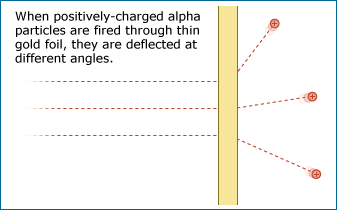

Science as a collective institution aims to produce more and more accurate natural explanations of how the natural world works, what its components are, and how the world got to be the way it is now. Classically, science's main goal has been building knowledge and understanding, regardless of its potential applications - for example, investigating the chemical reactions that an organic compound undergoes in order to learn about its structure. However, increasingly, scientific research is undertaken with the explicit goal of solving a problem or developing a technology, and along the path to that goal, new knowledge and explanations are constructed. For example, a chemist might try to produce an antimalarial drug synthetically and in the process, discover new methods of forming bonds that can be applied to making other chemicals. Either way (so-called "pure" or "applied" research), science aims to increase our understanding of how the natural world works.
The knowledge that is built by science is always open to question and revision. No scientific idea is ever once-and-for-all "proved." Why not? Well, science is constantly seeking new evidence, which could reveal problems with our current understandings. Ideas that we fully accept today may be rejected or modified in light of new evidence discovered tomorrow. For example, up until 1938, paleontologists accepted the idea that coelacanths (an ancient fish) went extinct at the time that they last appear in the fossil record - about 80 million years ago. But that year, a live coelacanth was discovered off the coast of South Africa, causing scientists to revise their ideas and begin to investigate how this animal survives in the deep sea.
Despite the fact that they are subject to change, scientific ideas are reliable. The ideas that have gained scientific acceptance have done so because they are supported by many lines of evidence. These scientific explanations continually generate expectations that hold true, allowing us to figure out how entities in the natural world are likely to behave (e.g., how likely it is that a child will inherit a particular genetic disease) and how we can harness that understanding to solve problems (e.g., how electricity, wire, glass, and various compounds can be fashioned into a working light bulb). For example, scientific understandings of motion and gases allow us to build airplanes that reliably get us from one airport to the next. Though the knowledge used to design airplanes is technically provisional, time and time again, that knowledge has allowed us to produce airplanes that fly. We have good reason to trust scientific ideas: they work!
A SCIENCE PROTOTYPE: RUTHERFORD AND THE ATOM
Ernest Rutherford's investigations were aimed at understanding a small, but illuminating, corner of the natural world: the atom. He investigated this world using alpha particles, which are helium atoms stripped of their electrons. Rutherford had found that when a beam of these tiny, positively-charged alpha particles is fired through gold foil, the particles don't stay on their beeline course, but are deflected (or "scattered") at different angles. Rutherford wanted to figure out what this might tell him about the layout of an atom.
Rutherford's story continues as we examine each item on the Science Checklist. To find out how this investigation measures up against the rest of the checklist, read on.